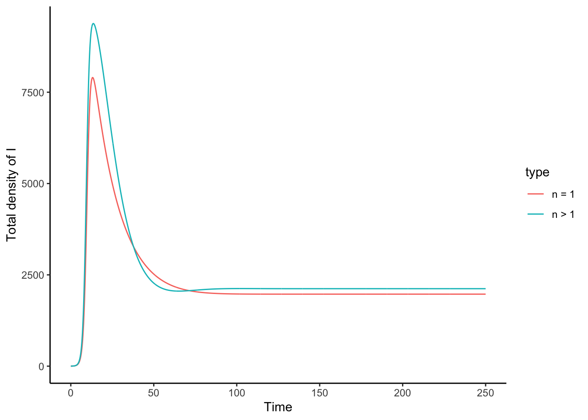

Chapter 3 Probabilistic models in disease evolution
Here we will focus on two applications: 1. A so-called ‘gamma-chain’ model which uses more realistic recovery distributions. 2. The famous Gillespie Model of Stochastic disease modelling
3.1 Gamma chain models
In the lectures we discussed that more realistic distributions of the recovery time may change the spead of the disease onset as well as the peak numbers of infected.
Here we will demonstrate this ourselves by running our own gamma chain model. A key parameter here is \(n\), the number of stages through which an individual has to pass before clearing the disease.
3.1.1 Gamma chain model code
## ── Attaching core tidyverse packages ─────────── tidyverse 2.0.0 ──
## ✔ dplyr 1.1.4 ✔ readr 2.1.5
## ✔ forcats 1.0.0 ✔ stringr 1.5.1
## ✔ ggplot2 3.4.4 ✔ tibble 3.2.1
## ✔ lubridate 1.9.3 ✔ tidyr 1.3.1
## ✔ purrr 1.0.2
## ── Conflicts ───────────────────────────── tidyverse_conflicts() ──
## ✖ dplyr::filter() masks stats::filter()
## ✖ dplyr::lag() masks stats::lag()
## ℹ Use the conflicted package (<http://conflicted.r-lib.org/>) to force all conflicts to become errors# incorporate a gamma distribution
# of infection time
# into an SIR model
sir_chain_mod <- function(t, init_densities, parameters)
{
# vector with all the densities
# received via the command line
x <- init_densities
# derive the total population size from
# the sum of the densities
N <- sum(init_densities)
# number of time steps an individual needs
# to undergo before the infection is cleared
n <- parameters["n"]
# we need at least one infected stage
stopifnot(n >= 1)
# some bounds checking
# we expect one density for S and R each
# and n densities for I, making n+2
stopifnot(length(x) == n + 2)
# initial density of S, this is only a single value
S <- x[1]
# initial density of I, because we have now
# different compartments this is a whole
I <- x[2:(n + 1)]
# then finally get the fraction of resistant
# individuals from the population density vector
R <- x[n + 2]
with(as.list(parameters), {
total_I <- sum(I)
# dS/dt is just the same as
# it ever was
dS <- mu * N - beta * S * total_I / N - mu * S
# allocate empty space filled
# with zeros for the n dI/dts
dI <- numeric(length = n)
# dI1/dt is a bit special as it receives
# susceptibles whereas dI2/dt etc do not
# hence write dI1/dt outside
# the for loop
dI[1] <- beta * S * total_I / N -
(mu + n * sigma) * I[1]
# evaluate all the the dI_i equations
if (n > 1)
{
for (i in 2:n)
{
dI[i] <- n * sigma * I[i - 1] -
(n * sigma + mu) * I[i]
}
}
# and finally dR/dt
dR <- n * sigma * I[n] - mu * R
result <- c(dS, dI, dR)
return(list(result))
})
} # end sir_chain_mod()
# first define our parameters, including n
# the number of stages an individual has to go
# through before clearing the infection
parameters <- c(sigma = 1/20, beta = 1, mu = 1/75)
parameters.n1 <- c(n = 1, parameters)
# once we have the parameters,
# produce a vector of initial densities
# pay attention to how we initialize I
# there are now n different infected types
# with I1 = 1, all other I = 0 as initial density
initial_densities = c(S = 9999,
I = c(1, numeric(length = parameters.n1["n"]-1)),
R = 0
)
# set the sequence of time points to solve
# the gamma chain ode over
times <- seq(0,250, by =0.1)
# run the model for n = 1
result.n1 <- as.data.frame(ode(y = initial_densities,
times = times,
func = sir_chain_mod,
parms =parameters.n1))
# now run the model for a higher
# number of classes that infecteds
# have to pass through, ie., n > 1
parameters.nhigher <- c(n = 3, parameters)
# again set initial densities, but now
initial_densities = c(S = 9999,
I = c(1, numeric(length = parameters.nhigher["n"]-1)),
R = 0
)
# capture the results of the model
result.nhigher <- as.data.frame(ode(y = initial_densities,
times = times,
func = sir_chain_mod,
parms =parameters.nhigher))
# now we need to get the total number of infecteds
# across all the classes
# we also label the rows of the dataset
result.n1 <- result.n1 %>% mutate(
totalI = result.n1 %>% select(starts_with("I")) %>% rowSums(),
type = "n = 1"
)
# now we need to get the total number of infecteds
# across all the classes
result.nhigher <- result.nhigher %>% mutate(
totalI = result.nhigher %>% select(starts_with("I")) %>% rowSums(),
type = "n > 1"
)
# finally we need to combine both data.frames
# so that we can plot the results
overall.data <- bind_rows(
result.n1 %>% select(c(time, totalI, type)),
result.nhigher %>% select(c(time, totalI, type))
)
ggplot(data = overall.data,
mapping= aes(x = time,
y = totalI)) +
geom_line(mapping = aes(colour=type)) +
ylab("Total density of I") +
xlab("Time")
3.1.2 Task: run the gamma chain model
Copy the code above to a clean script window in Rstudio and run it. Can you glean at the parameters above and find the value of $R_{0} = / $?
Do you see any differences between \(n = 1\) (the classical SIR) and \(n > 1\) (the gamma chain model)?
3.1.3 Task: lower the \(R_{0}\) value in the gamma chain model
Now run the same model again but for lower values of \(R_{0}\) than previously considered. For example, by setting \(\sigma = 1/4\). You should see that both lines fluctuate before settling on an equilibrium.
However, what is different about the fluctuations for \(n > 1\)? Why do you think this is?
3.1.4 Task: increase \(n\)
Now increase \(n\) to, for example, \(n = 10\), so that individuals need to pass through more stages before clearing the disease. Compare your results to the previous task. What has changed?
3.1.5 Extra: increase \(n\) even further
If you would change \(n\) to even larger values something ‘interesting’ happens, namely that ode()
now often fails to solve the model or gives spurious results.
This happens because the densities of infecteds are
now distributed over so many classes that the per-class
density becomes too low to solve for ode(). Slightly
advanced methods are needed, for example by transforming
the model to a log scale (e.g., see Bjørnstad 2023, p. 27) that are beyond the scope of this practical.